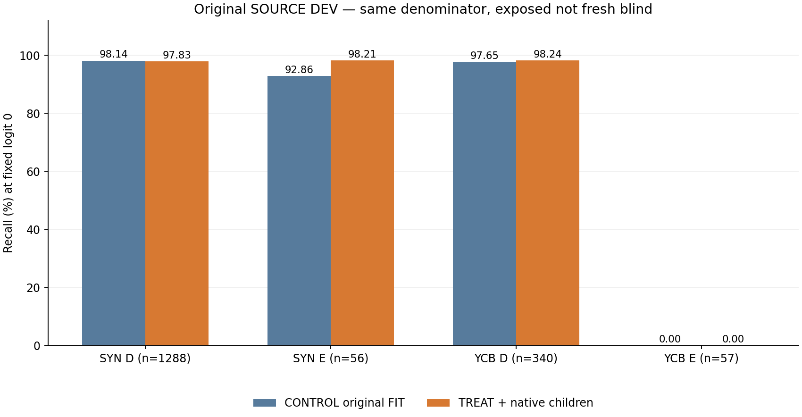
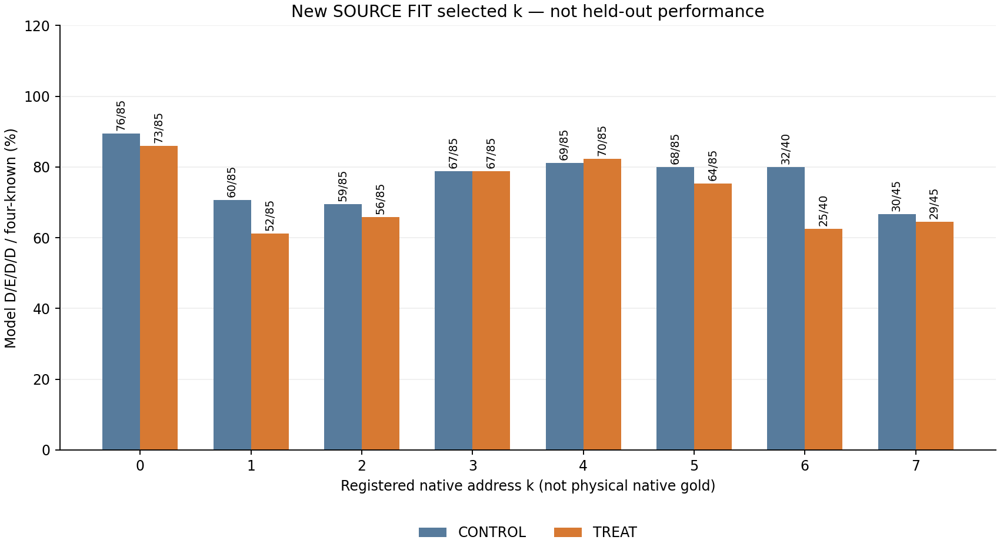

부분적인 SYN 변화입니다. YCB DEV E 두 팔 모두 0/57. SOURCE DEV는 반복 노출됐으며 fresh blind 검증이 아닙니다. 모델 미채택/current·held 새 실행 0. 현재 pallet 실사 개선 결과가 아닙니다.
각 76098 parameters, 같은 seed17 초기값, 각1000 updates. 원 YCB 자료·draw 동일; 새 non-BEFORE known FIT 12,495행 추가. 원 threshold0·q/L/U 보존.
| 교사 | 클래스 | 분모 | CONTROL 정답/분모 | TREAT 정답/분모 | C recall | T recall | C precision | T precision |
|---|---|---|---|---|---|---|---|---|
| SYN 등록 witness | D | 1288 | 1264/1288 | 1260/1288 | 98.14% | 97.83% | 99.68% | 99.92% |
| SYN 등록 witness | E | 56 | 52/56 | 55/56 | 92.86% | 98.21% | 68.42% | 66.27% |
| YCB associated-r AUX | D | 340 | 332/340 | 334/340 | 97.65% | 98.24% | 85.35% | 85.42% |
| YCB associated-r AUX | E | 57 | 0/57 | 0/57 | 0.00% | 0.00% | 0.00% | 0.00% |
| k | 후보 | S | 구성 | 4 known | C D/E/D/D | T D/E/D/D |
|---|---|---|---|---|---|---|
| 0 | 86 | 0 | 86 | 85 | 76 | 73 |
| 1 | 86 | 0 | 86 | 85 | 60 | 52 |
| 2 | 86 | 0 | 86 | 85 | 59 | 56 |
| 3 | 86 | 0 | 86 | 85 | 67 | 67 |
| 4 | 86 | 0 | 86 | 85 | 69 | 70 |
| 5 | 86 | 0 | 86 | 85 | 68 | 64 |
| 6 | 86 | 46 | 40 | 40 | 32 | 25 |
| 7 | 86 | 40 | 46 | 45 | 30 | 29 |
CM/P/R/U·FIT 별도: METRICS.csv. D/E/D/D는 실제 fresh targets와 all-four-known 595개에서 확인. FITmembership과 실제 draw 노출 구분, V254 strict87과 직접 % 비교 금지.
새 FIT all-four-known 595개에서 모델 D/E/D/D는 CONTROL 461/595 (77.48%) → TREAT 436/595 (73.28%)로 감소했습니다. 구성602개의 실제 fresh point0 D/E/D/D와, 그중 input/locality 조건까지 known인595개의 모델 패턴을 구분합니다. COVER−BEFORE/FAR 양수는 양팔595/595, COVER−NEAR 양수569→576/595입니다. 방향성 반응과 threshold0 네 예측 정답은 다른 관측입니다.


SYN intended registered witness와 YCB associated-r AUX는 별도 namespace입니다. physical native/literal q/SELF gold로 주장하지 않습니다. 네 클래스 평균 BR 72.16% → 73.57% (+1.408705 pp), 최악 recall 감소 0.310559 pp. 자동 deployment gate/채택 없음.